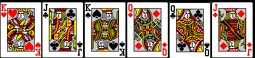
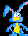

Now it is time to mix-up the cards.While the tornado mixes the cards you
see a rabbit run out from it with all of the cards. You chase him
around the tornado and eventually get the cards. When you start
looking at the cards you notice that something strange has
happened.

(Touch the rabbit to continue)